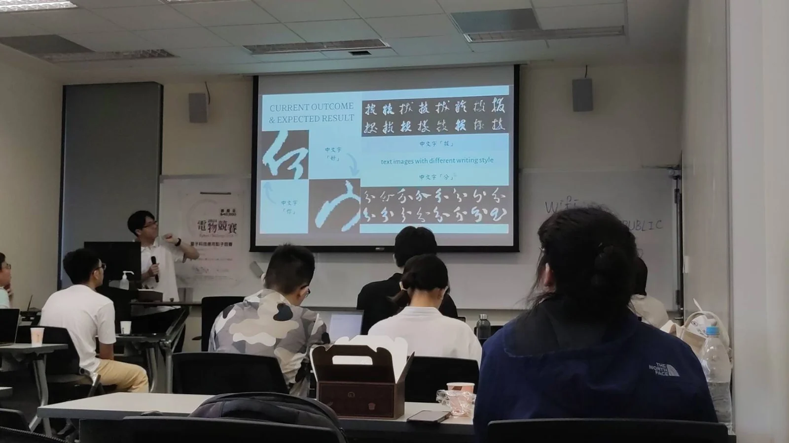

LEARNING THEORY2025–2026
Learning Capacity of Kolmogorov–Arnold Networks
An NSTC-funded theoretical study of KAN model capacity, generalization, and sample complexity.
Research & Projects
Each card gives a short overview. Open the details to see a fuller description of my role, the main work, methods, and results.
An NSTC-funded theoretical study of KAN model capacity, generalization, and sample complexity.
Current research at Academia Sinica on eigenstructure-based tests for estimating the number of effective signals in multivariate data.
A geometry-aware initialization method for sigmoidal MLPs, accepted by ACCV 2026.
Transformer-based satellite-image segmentation developed during a TASA internship and later extended into a journal publication.
A vision-based workflow that estimates UAV location by matching aerial observations with satellite imagery.
Generative modeling workflows that infer optical-band information from SAR imagery for downstream remote-sensing analysis.
Optimization of real-time object detection on constrained edge-computing hardware for satellite applications.

A collaborative project on calligraphy generation and OCR, with experiments in simulation and on real quantum hardware.

A recommendation system built from Google Maps reviews and user preferences; presented at IMA AI/ML Congress 2024.

A low-cost fall-detection and home-safety system deployed on NVIDIA Jetson, developed as a team project.

Satellite-image segmentation for detecting solar panels and wind turbines and converting masks into inventory statistics.
A Minecraft community and hosting operation that grew to more than 5,000 registered users and a 20-person team.